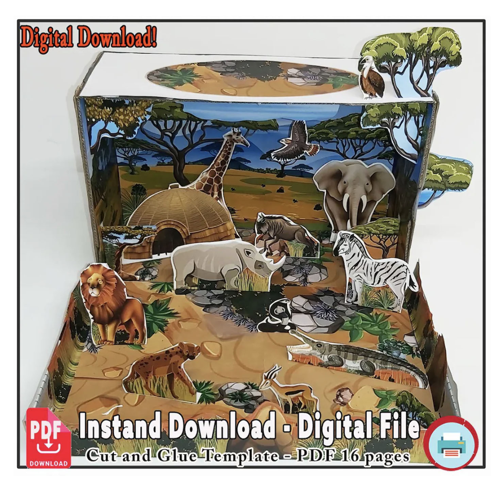
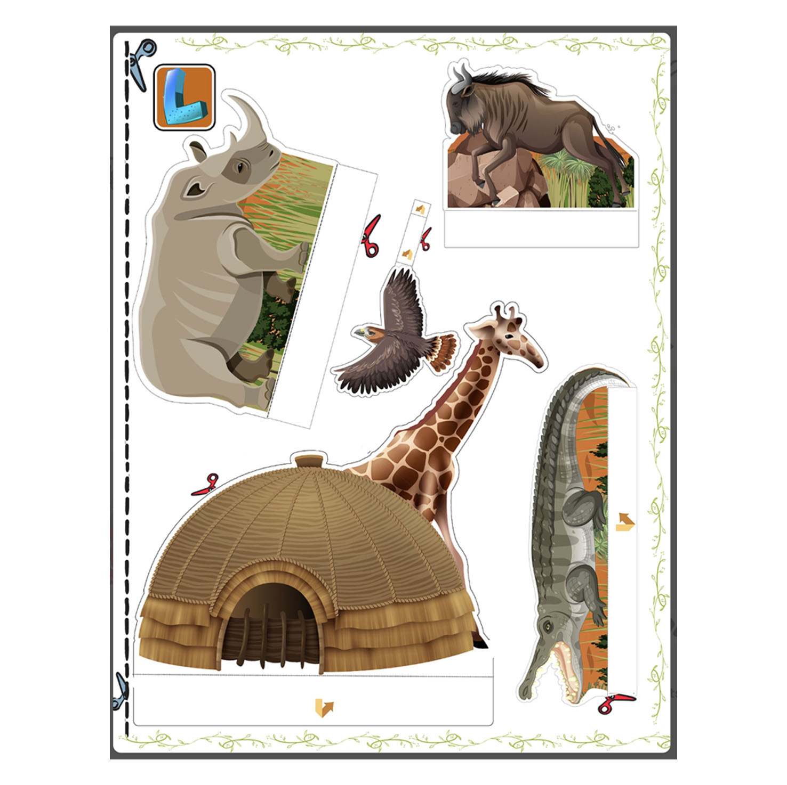
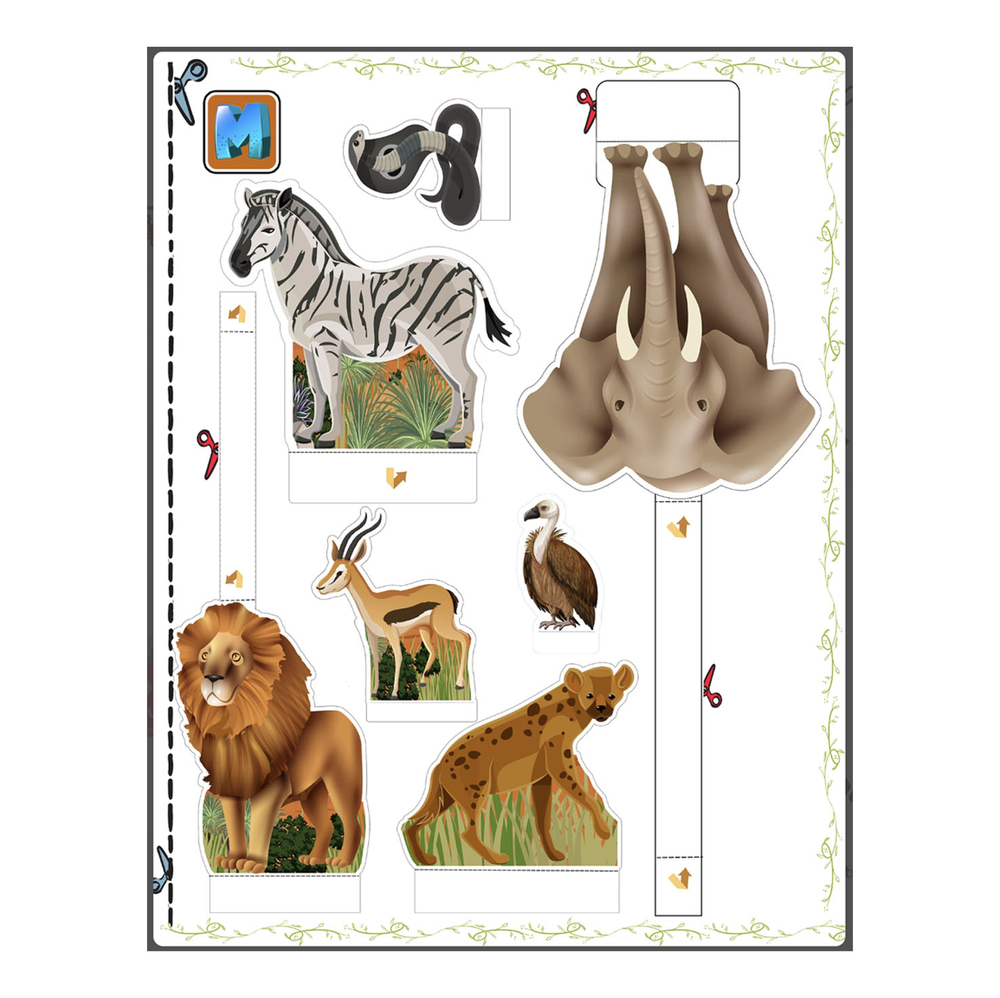
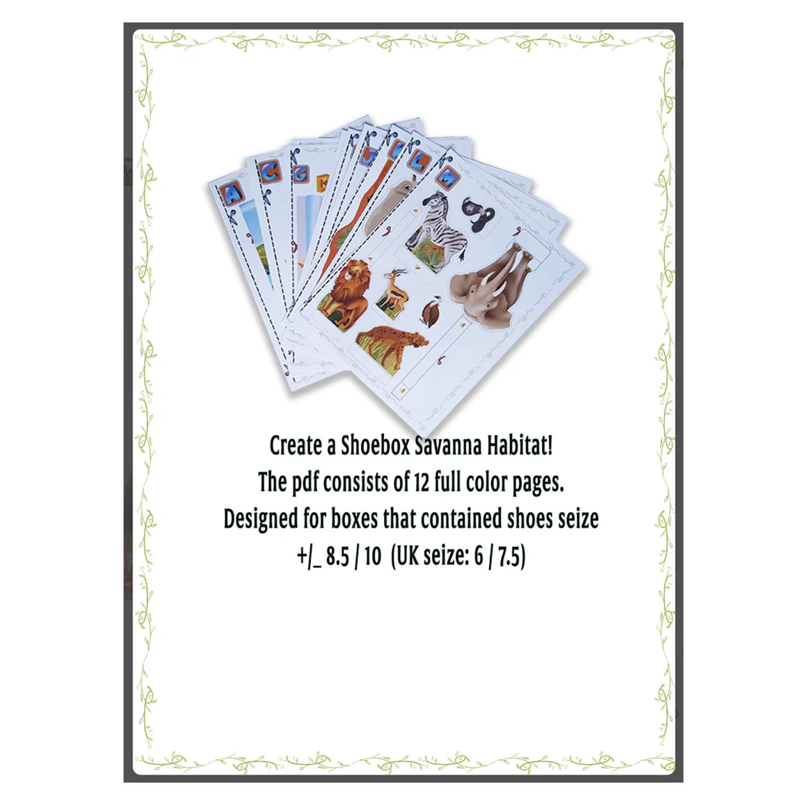

STEP 01
Print the full-color grassland backgrounds, scenery and illustrated pieces included in the digital PDF.

Turn an ordinary shoebox into a warm, open grassland scene filled with wildlife. This printable paper project gives kids a fun way to explore the savanna ecosystem, animal habitats and creative model making.
View the Printable Kit on EtsyThe savanna is a great habitat to build because it looks and feels completely different from a forest or rainforest. Instead of dense trees, kids work with wide open grasslands, scattered vegetation and animals that need space, water, food and shade.
The finished shoebox can be used for a school project about habitats, a homeschool nature lesson, a creative afternoon at home or a classroom activity about wildlife and ecosystems.
While cutting and arranging the scenery, children can think about where different animals might live, where they find food, and how an open grassland habitat shapes the way animals move and survive.
When the diorama is finished, it can become a storytelling scene, presentation model, photo backdrop or miniature set for a stop-motion adventure across the savanna.
Print the pages, cut out the savanna scenery and animals, and build the grassland habitat layer by layer inside a shoebox.
Print the full-color grassland backgrounds, scenery and illustrated pieces included in the digital PDF.

Cut out the animals, plants and other pieces ready to arrange inside the shoebox.

Layer everything inside the box and turn the printed pages into a miniature savanna world.

The Savanna Habitat uses the same simple placement system as the other shoebox projects in the collection.
On selected pages, a small shoebox illustration and arrow show where a background or cut-out piece is intended to go. That helps kids move through the project without needing long written instructions.
Take a closer look at the finished project and see how the layered pieces create a miniature grassland scene.
The shoebox is not included. The design works best with a typical shoebox that originally held approximately US shoe sizes 8.5–10 (UK 6–7.5). Small differences in box size can easily be adjusted with an extra piece of paper, pencil or marker.
Savannas are open grassland ecosystems with scattered trees and seasonal changes in water and vegetation. That makes them a useful habitat for talking with kids about how animals adapt to their surroundings.
While building the diorama, children can think about where animals find shade, what they might eat, how they move across open landscapes and why access to water can be so important.
The completed shoebox can then be used for a school presentation, nature discussion, imaginative storytelling or simply as a colorful miniature scene to keep and enjoy.
Discover more printable shoebox dioramas and compare the landscapes, wildlife and ecosystems found in different habitats.
If this looks like a fun wildlife or habitat project for home or school, the complete 16-page printable Savanna Habitat kit is available as a digital download from my Etsy shop.
View the Savanna Habitat on Etsy